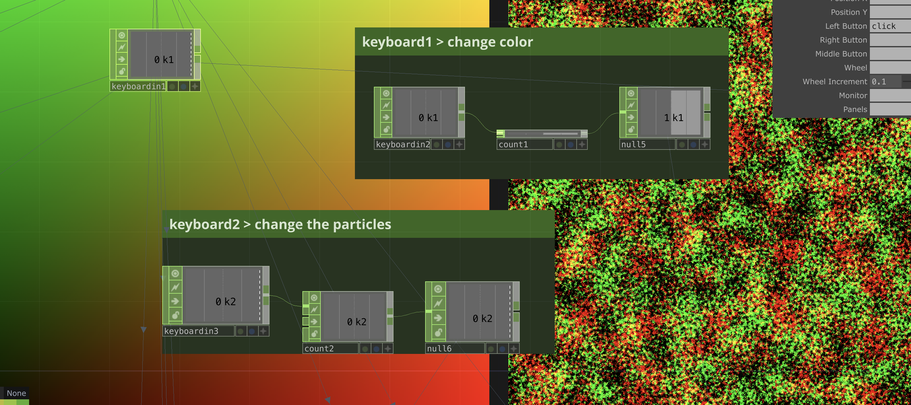
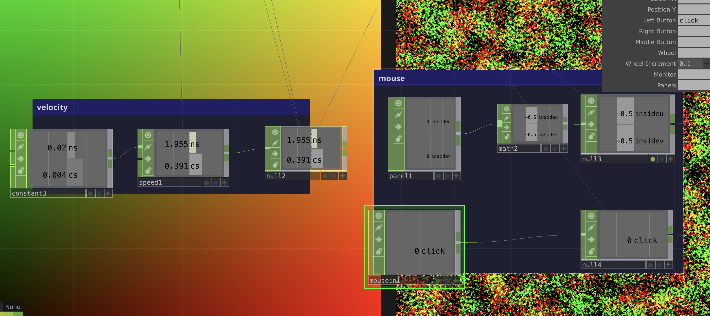
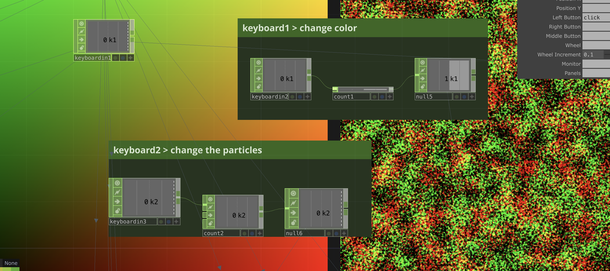
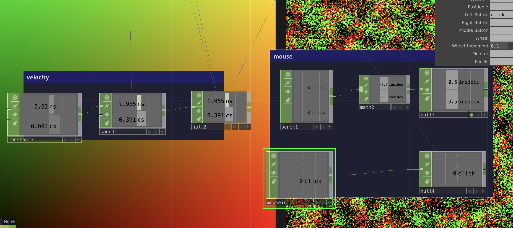

Situated Loops
What are the input signals in your installation? How do they transform the system and how are they transformed by it?
I plan to do the cosmic simulation. This could include mouse movement, keyboard commands. These signals transform the system by controlling parameters such as position, color and density of cosmic elements. By interpreting and responding to these input signals, the system creates an interactive experience that engages users and allows them to influence the cosmic simulation in real-time.
Are you providing direct or indirect causal connection between the input and the outcome?
Direct Connection: input signals, such as mouse movement or keyboard commands to control the position and velocity of cosmic elements.
Indirect Connection: data streams, influencing the simulation’s behavior and appearance.
Does delay play a role in your feedback mechanism?
I think “delay” can play a role in the feedback mechanism in my project. In my interactive installation, real-time feedback is crucial to maintaining a responsive and immersive user experience. Minimal delay ensures that user inputs, such as mouse movements or keyboard commands, are immediately reflected in the simulation, creating a sense of direct control and engagement.
The Personal Creative Practice
what media do you want to work in? what tools do you like to use and why? what skills would you like to learn or hone and for what purpose?
1/ I am interested in Touch Designer as it has strong visual effects. For this personal project, I would like to simulate “the cosmic” controlled by the mouse. I plan to start by creating a visual representation of cosmic elements like stars, galaxies, or nebulae. I would like to use the mouse input to control parameters such as position, velocity, size, color, or density of these elements.
2/ I think I can deepen my understanding of TouchDesigner by mastering its various features, nodes, and workflows by doing this project. Explore advanced techniques for creating complex visual effects, optimizing performance, and integrating external data sources. This will equip me with advanced software ability to prepare my thesis year.
Documentation
1/ Apply “noise” to the position of stars or galaxies to create organic movement patterns, simulating the dynamic nature of cosmic phenomena.
2/ Create a ramp to define color; for instance, using transitions from blue to white represents stars of varying temperatures,
3/ Add keyboard interaction to enhance interactivity and allow users to switch between different particle styles seamlessly.
4/ Add mouse interaction to control the track of the galaxies.
Cosmic Video
 
